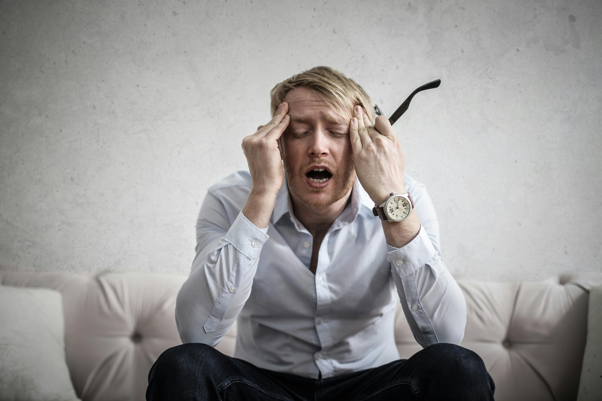

Ce este anxietatea și cum o recunoaștem?
Anxietatea este o reacție naturală a corpului la stres, o emoție caracterizată prin sentimente de tensiune, gânduri îngrijorătoare și modificări fizice, cum ar fi creșterea tensiunii arteriale. A simți anxietate ocazional este o parte normală a vieții.
Totuși, persoanele cu tulburări de anxietate se confruntă frecvent cu îngrijorări și frici intense, excesive și persistente legate de situații cotidiene. Adesea, tulburările de anxietate implică episoade repetate de sentimente bruște de anxietate intensă și frică sau teroare care ating un maxim în câteva minute (atacuri de panică).
Tipuri Comune de Tulburări Anxioase:
- Tulburarea de anxietate generalizată (TAG): Anxietate excesivă și îngrijorare legată de diverse evenimente sau activități, dificil de controlat.
- Tulburarea de panică: Episoade bruște și repetate de frică intensă care declanșează reacții fizice severe, fără un pericol real aparent.
- Fobii specifice: Anxietate marcată atunci când persoana este expusă la un obiect sau o situație specifică și o dorință de a o evita.
- Tulburarea de anxietate socială (fobia socială): Niveluri ridicate de anxietate, frică și evitare a situațiilor sociale din cauza sentimentelor de jenă, conștiință de sine și îngrijorare cu privire la a fi judecat sau privit negativ de către alții.
Simptome Comune:
Simptomele pot varia în funcție de tipul tulburării, dar adesea includ:
- Sentiment de nervozitate, agitație sau tensiune
- Senzație de pericol iminent, panică sau catastrofă
- Ritm cardiac crescut
- Respirație rapidă (hiperventilație)
- Transpirație, Tremurături
- Senzație de slăbiciune sau oboseală
- Dificultăți de concentrare sau de a te gândi la altceva decât la îngrijorarea prezentă
- Probleme cu somnul
- Evitarea situațiilor care declanșează anxietatea
Dacă anxietatea interferează cu activitățile tale zilnice, este dificil de controlat și te face să eviți situații, este important să cauți ajutor specializat. Consilierea psihologică te poate ajuta să înțelegi și să gestionezi eficient simptomele.
« Înapoi la Blog